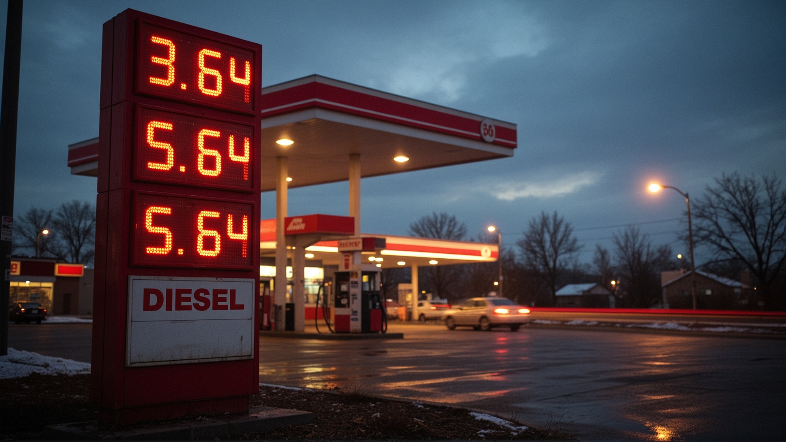

Gas prices just set a Thanksgiving record — Britain pays double
The most expensive Thanksgiving tank ever recorded, and the fastest fall in two years, arriving in the same week. Five things almost everyone gets wrong about it — and a state spread of $2.54 a gallon.
The US national average for regular gas is $3.6366, 2.4 cents above the all-time Thanksgiving record of $3.58 set in 2022. It is also falling about six cents a day, so Thursday could land either side of that record. North Carolina is cheapest at $3.06 and Hawaii dearest at $5.60. Britain pays the equivalent of $8.28 a gallon.

- $3.64National average, 23 Nov
- $3.58Prior record, 2022
- $2.54Spread, cheapest to dearest state
- $8.28Equivalent UK price, per gallon
The national average price of regular gasoline stood at $3.6366 a gallon on Monday, according to AAA's daily survey — 2.4 cents above the $3.58 that stands as the all-time Thanksgiving Day record, set in 2022. If the number holds through Thursday it will be the most expensive Thanksgiving at the pump in the ninety-odd years AAA has kept the series. It is, on present arithmetic, already the most expensive.
It is also falling faster than at any point since the spring of 2024, and the two facts are not in conflict. They are the same fact viewed from different ends: a price that ran to $4.48 in May, held above $4.00 through the first week of November, and has since given back 42 cents in six days. Every day that passes, the record gets thinner. Thursday's average could land above $3.58 or below it, and the difference between those outcomes is roughly four more days of the current rate of decline.
The record, and why it is already in doubt
There is no version of this holiday where the pump is cheap. There is a version where it is less expensive than it was on Friday, and a version where the number written down on Thursday is the worst ever recorded.
AAA still expects 81.5 million people to travel at least 50 miles between Tuesday and the Monday after — a decline of 121,000, or one-tenth of one percent. Three years of post-pandemic records end here, on a rounding error. Of those travelers, 72.9 million will drive, 5.94 million will fly and 2.6 million will take bus, train or cruise. Round-trip domestic fares booked through AAA averaged $800, up 17% from last year.
"After three years of record highs, the number of travelers is slightly lower partly because of higher travel costs this year," AAA Travel vice president Stacey Barber said. "But travelers won't notice much of a difference."
Gasoline is the visible cost of this holiday. It is not the largest one. A household driving 600 miles is spending about $84 on fuel at the national average and $58.63 on the dinner itself — and the dinner rose 6.3% in a year, faster than any other line in the meal.
Five things almost everyone gets wrong
Most of the advice circulating this week is either out of date or arithmetically backwards. These are the five that cost real money.
-
Filling up on Wednesday, because "it will be worse Thursday."
It usually is not. Refinery restarts and winter-blend switchover are pulling prices down six to seven cents a day, and holiday demand is already priced in by Tuesday. Waiting a day saves 60 to 84 cents on a 12-gallon fill. The exception is a station with a visible queue — 20 minutes of idling burns a third of a gallon and eats the difference.
-
Driving 40 miles to save 30 cents a gallon.
At 30 cents and 26 mpg, break-even is about 15 miles each way. Past 25 miles of detour the arbitrage is a hobby. The spread looks enormous in the table below precisely because almost nobody can reach the cheap column without already being there.
-
Believing premium fixes a car that does not need it.
Premium is 50 to 90 cents a gallon above regular and returns nothing in a car whose manual specifies 87 octane. It is not cleaner and it does not improve economy enough to pay for itself. Check the fuel door, not the marketing.
-
Chasing fuel points instead of the pump price.
A 10-cent loyalty discount on a $3.90 station still loses to a $3.60 station with no programme. Compare the post-discount price, not the discount. Warehouse-club pumps are typically 20 to 40 cents under the street and need no points at all.
-
Assuming the record means the peak has passed.
Prices are falling because supply is loose and demand is soft — not because anything structural was fixed. The Strategic Petroleum Reserve sits at 39% of capacity, thinner cushion than in past drawdowns. One refinery fire reverses four days of decline in an afternoon.
What the drive costs, state by state
National averages hide a spread that decides what Thanksgiving costs a household more than any other variable. The cheapest state, North Carolina, is at $3.06. The most expensive, Hawaii, is at $5.60. That is $2.54 a gallon — and on a 600-mile round trip in a 26 mpg car, $56.53.
The table converts every state's Monday price into two figures a driver can use: a 12-gallon fill, and that 600-mile round trip. Both use the AAA state average published 20 November, held flat. Individual stations vary by 30 cents or more either way.
| State | $/gal | Fill (12 gal) | 600-mi round trip |
|---|---|---|---|
| Hawaii | 5.60 | $67.20 | $129.23 |
| California | 5.51 | $66.12 | $127.15 |
| Nevada | 4.80 | $57.60 | $110.77 |
| Washington | 4.74 | $56.88 | $109.39 |
| Oregon | 4.37 | $52.44 | $100.85 |
| Alaska | 4.36 | $52.32 | $100.62 |
| Pennsylvania | 4.15 | $49.80 | $95.77 |
| District of Columbia | 4.10 | $49.20 | $94.62 |
| New York | 4.08 | $48.96 | $94.15 |
| Vermont | 4.02 | $48.24 | $92.77 |
| Illinois | 4.02 | $48.24 | $92.77 |
| Idaho | 3.99 | $47.88 | $92.08 |
| Arizona | 3.97 | $47.64 | $91.62 |
| Connecticut | 3.96 | $47.52 | $91.39 |
| Utah | 3.96 | $47.52 | $91.39 |
| Maine | 3.94 | $47.28 | $90.92 |
| New Hampshire | 3.90 | $46.80 | $90.00 |
| Massachusetts | 3.89 | $46.68 | $89.77 |
| New Jersey | 3.88 | $46.56 | $89.54 |
| Wyoming | 3.83 | $45.96 | $88.39 |
| West Virginia | 3.81 | $45.72 | $87.92 |
| Rhode Island | 3.76 | $45.12 | $86.77 |
| Maryland | 3.73 | $44.76 | $86.08 |
| Delaware | 3.71 | $44.52 | $85.62 |
| Michigan | 3.67 | $44.04 | $84.69 |
| Nebraska | 3.66 | $43.92 | $84.46 |
| Virginia | 3.64 | $43.68 | $84.00 |
| South Dakota | 3.62 | $43.44 | $83.54 |
| New Mexico | 3.59 | $43.08 | $82.85 |
| North Dakota | 3.59 | $43.08 | $82.85 |
| Minnesota | 3.57 | $42.84 | $82.38 |
| Montana | 3.56 | $42.72 | $82.15 |
| Iowa | 3.54 | $42.48 | $81.69 |
| Colorado | 3.53 | $42.36 | $81.46 |
| Florida | 3.51 | $42.12 | $81.00 |
| Wisconsin | 3.50 | $42.00 | $80.77 |
| Kansas | 3.50 | $42.00 | $80.77 |
| Kentucky | 3.46 | $41.52 | $79.85 |
| Mississippi | 3.46 | $41.52 | $79.85 |
| Missouri | 3.42 | $41.04 | $78.92 |
| Alabama | 3.40 | $40.80 | $78.46 |
| Arkansas | 3.38 | $40.56 | $78.00 |
| Tennessee | 3.35 | $40.20 | $77.31 |
| Louisiana | 3.34 | $40.08 | $77.08 |
| South Carolina | 3.30 | $39.60 | $76.15 |
| Georgia | 3.25 | $39.00 | $75.00 |
| Ohio | 3.25 | $39.00 | $75.00 |
| Oklahoma | 3.24 | $38.88 | $74.77 |
| Texas | 3.20 | $38.40 | $73.85 |
| Indiana | 3.17 | $38.04 | $73.15 |
| North Carolina | 3.06 | $36.72 | $70.62 |
Eleven states now sit below $3.35. Twenty-two sit at $3.57 or above. The line between them is mostly tax policy and distance from a refinery, and only partly crude: state fuel taxes run from 8.9 cents a gallon in Alaska to 73.6 cents in California, with the federal 18.4 cents on top of everything. California carries an additional penalty — its gasoline is a boutique blend no other market can absorb, so one outage in the Los Angeles basin moves the whole state.
How that compares to the rest of the world
The American number feels enormous from inside America and looks small from almost anywhere else. Converted to a common measure, the US is the cheapest large economy on earth for fuel apart from the petrostates, and Britain pays more than double.

The UK average for unleaded was 167.07 pence a litre in the week of 16 November. That is £7.59 an imperial gallon, or $8.28 a US gallon at today's rate. The gap is not geology. It is tax: Britain levies 52.95 pence a litre in fuel duty plus 20% VAT on the whole price, roughly £1.10 a litre before a drop of fuel is refined. The US levies 18.4 cents a gallon federally and about 31 cents on average at state level.
| Country | US$/US gal | × US price |
|---|---|---|
| Tier 1 — English-speaking markets | ||
| United Kingdom | 8.28 | 2.27× |
| Ireland | 8.15 | 2.24× |
| New Zealand | 7.58 | 2.08× |
| Australia | 5.22 | 1.43× |
| Canada | 4.72 | 1.30× |
| United States | 3.64 | 1.00× |
| Tier 2 and 3 — for scale | ||
| Hong Kong | 16.75 | 4.60× |
| Norway | 10.43 | 2.87× |
| Netherlands | 9.12 | 2.51× |
| Germany | 8.15 | 2.24× |
| South Africa | 6.67 | 1.83× |
| Mexico | 5.83 | 1.60× |
| Philippines | 4.69 | 1.29× |
| India | 4.40 | 1.21× |
| Brazil | 4.33 | 1.19× |
| Nigeria | 3.26 | 0.90× |
| Saudi Arabia | 2.35 | 0.65× |
| Iran | 0.11 | 0.03× |
Two caveats before anyone books a forecourt in Tehran. Cheap pump prices sit on top of much lower wages — a gallon at $4.40 in India is a far larger share of a household budget than $3.64 in Ohio, which is why Indian fuel taxes are structured the way they are. And subsidised prices are paid for somewhere else in the budget, usually by cutting something.
The diesel chain, and the turkey
Diesel is the price that never appears on the sign a driver reads. It averaged $5.96 a gallon nationally against $3.69 for regular — a gap of $2.27, close to a record, running from $5.26 in North Carolina to $7.86 in California. Diesel is up 64% year on year, roughly double the 28% rise in regular.
Nearly everything on a Thanksgiving table moved by truck: the bird, the potatoes, the canned pumpkin, the cream. The American Farm Bureau Federation's survey, released 18 November, put an average dinner for ten at $58.63, up 6.3% from $55.18, driven by record turkey prices with the USDA forecasting frozen whole hen above $1.74 a pound wholesale.
One caveat worth stating plainly, because it complicates the tidy version: Farm Bureau economist Bernt Nelson has said diesel likely had little to do with this year's turkey price. The birds eaten on Thursday were placed and priced months before diesel spiralled. The diesel number is real, it is in the freight system, and it lands in next year's bird more than this one's.
Flying did not escape either. September airfares ran 22% above a year earlier on government data as carriers absorbed jet fuel and raised bag fees. Cirium had Thanksgiving bookings 1.6% behind 2025 in late October. Visa's research arm found card spending on holiday-period flights down year on year for every income band except households above $200,000.
How a price gets to $4.48, then to $3.64
The run-up began with the war with Iran, which lifted crude and, more sharply, refined product. Gasoline peaked at $4.48 in May and stayed above $4.00 into the first week of November — $4.06 on the 6th, a level no previous November had reached. Diesel went further and stayed longer, because diesel is the product freight cannot substitute.
Three things now push the other way at once. Refineries have finished autumn maintenance and are running into winter-blend specification, which is cheaper to make. Crude has come off its highs. And demand falls every year in the fortnight before Thanksgiving, because households front-load what they can.
What could stop it is the thing that has stopped every recent decline: a supply shock at one point. The Strategic Petroleum Reserve sits at 39% of capacity, less cushion than in previous drawdowns. A refinery fire, a Gulf hurricane, a new escalation in the Strait of Hormuz — any one reverses four days of decline in an afternoon. The 42-cent fall of the past week is not a trend yet. It is a window.
What actually helps
Fill on Thursday, not Wednesday
The highest-value action is also the simplest: wait. At six to seven cents a day, a 12-gallon fill bought Thursday instead of Tuesday is 60 to 84 cents cheaper, more if the fall steepens. Skip it only where a queue is already forming.
Cut speed before you cut stops
Drag rises with the square of speed. Dropping from 75 mph to 65 typically returns 15% to 20% fuel economy — worth more on a 600-mile trip than any app discount. Tyre pressure at the door-jamb figure, not the sidewall maximum, is worth another 1% to 2%.
Compare the post-discount price
Fuel cards and grocery-linked programmes are running 10 to 30 cents off in most metros. Warehouse-club pumps are typically 20 to 40 cents under the street with no programme at all. Stack them where you can, but price the station first.
What your trip costs
Your own figures. Nothing leaves the page.
23.1 gallons at the national average.
Questions
Will gas prices go down before Thanksgiving?
Probably, slightly. The national average has fallen about 42 cents in six days — six to seven cents a day — on refinery restarts and cheaper winter-blend fuel. At that rate Thursday lands near or below the 2022 record of $3.58. A refinery outage or a new escalation in the Gulf reverses it in an afternoon.
What is the most expensive Thanksgiving gas price on record?
$3.58 a gallon, on Thanksgiving Day 2022. AAA's national average stood at $3.6366 on 23 November 2026, 2.4 cents above it, so 2026 sets a new record unless the decline runs through Thursday.
Which state has the cheapest gas right now?
North Carolina, at $3.06 on the AAA state series of 20 November. Hawaii is dearest at $5.60 — a spread of $2.54, about $56 on a 600-mile round trip at 26 mpg.
Is it cheaper to drive or fly this Thanksgiving?
For one or two people, driving almost always wins. Round-trip domestic fares booked through AAA averaged $800, up 17%. A 600-mile round trip costs about $84 in fuel. Flying only beats driving on long trips with four or more travellers.
Why is US gas so much cheaper than British petrol?
Tax. US fuel carries 18.4 cents of federal tax plus about 31 cents of state tax. UK fuel duty is 52.95 pence a litre plus 20% VAT — roughly £1.10 a litre in tax alone. Britain pays about $8.28 a gallon against $3.64 here.
Why is diesel so much more expensive than regular?
Diesel averaged $5.96 against $3.69 for regular on 20 November, near a record gap. Freight demand, low distillate stocks and winter refinery yields that favour gasoline all push it up. It is 64% higher than a year ago.
How much will Thanksgiving dinner cost?
The Farm Bureau put an average dinner for ten at $58.63, up 6.3% from $55.18, on record turkey prices. That is a fixed basket, not any individual household's spend.
How this was calculated
State prices are AAA's published state averages for 20 November 2026, the most recent complete 50-state set. National figures use AAA's daily series, $3.6366 on 23 November; the prior Thanksgiving record of $3.58 is from the same series in 2022. Diesel figures are 20 November state averages. Trip costs assume 600 miles at 26 mpg and 23.08 gallons; fills assume 12 gallons. No adjustment is made for station-level variation.
International prices are converted at 24 November rates (GBP 1.3095, AUD 0.66416) to a US gallon. UK figures are the national unleaded average for the week of 16 November; Australia's are the ACCC five-city daily average for 18 November; others are GlobalPetrolPrices Octane-95 for 16 November. Because US regular is a lower grade than Octane-95, the US row here is the AAA regular figure and multiples are computed against it — the effect is small and runs in the conservative direction.
The dinner figure is the Farm Bureau's 18 November survey. Airfare figures are AAA's booked round-trip average and the September CPI airfare series.
Sources
- AAA, daily national and state averages, accessed 24 November 2026.
- AAA Newsroom, Thanksgiving holiday travel forecast, 16 November 2026.
- Associated Press, AAA forecasts another busy — but not quite as busy — Thanksgiving travel week, 16 November 2026.
- US Energy Information Administration, Gasoline and Diesel Fuel Update, weekly.
- GlobalPetrolPrices, gasoline prices by country, 16 November 2026.
- Australian Competition and Consumer Commission, weekly fuel report, 18 November 2026.
- American Farm Bureau Federation, Thanksgiving dinner cost survey, 18 November 2026.
- US Department of Agriculture, wholesale turkey price forecast, November 2026.
- Tax Foundation, state fuel tax rates, 2026 edition.
- Cirium and Visa Economic Research, holiday booking and card-spend data, October–November 2026.
- ArithmeticAverage gas cost per month is $326 — and a strait 7,000 miles away is about to add $62
- Energy · DataElectricity prices in all 50 states, and the five that rose most
- AnalysisCongress answered 417-3 on who pays. Then the Senate killed it 57-43
- HousingWater refugees: where drought is moving American home prices